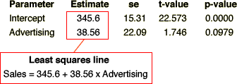
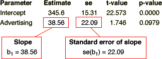
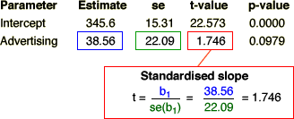
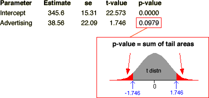
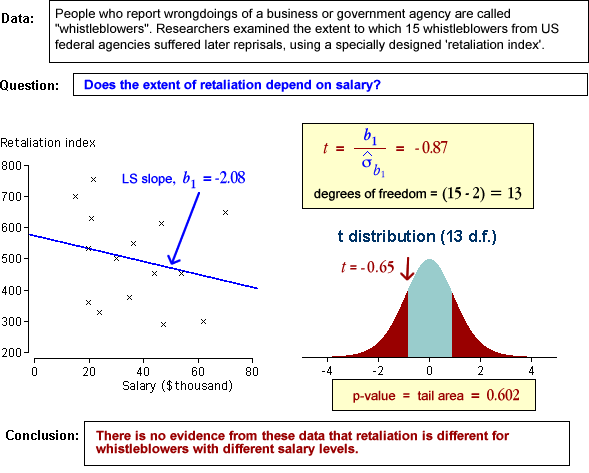
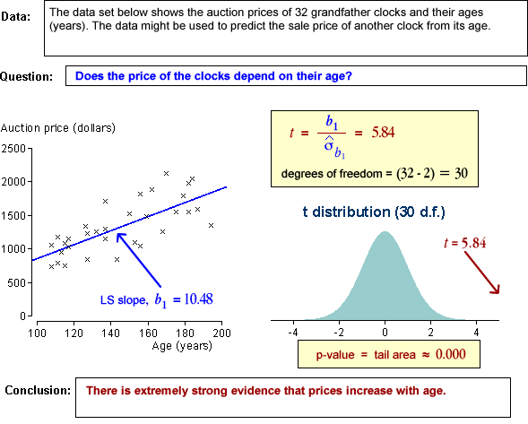

Does the response depend on X?
In a normal linear model, the response has a distribution whose mean, µy, depends linearly on the explanatory variable,
Y ~ normal (μy , σy)
If the slope parameter, β1, is zero, then the response has a normal distribution that does not depend on X.
Y ~ normal (β0 , σ)
This can be tested formally with a hypothesis test for whether β1 is zero.
Hypothesis test
H0 : β1 = 0
HA : β1 ≠ 0
The test is based on the 'statistical distance' of b1 from zero,

and this has a t distribution with (n - 1) degrees of freedom if there really is no relationship.

Using output from statistical software
Computer software will provide everything you need to perform the test in its regression output:




Examples

